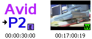
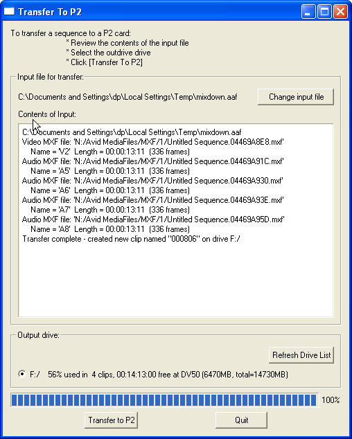

TransferToP2TransferToP2 is an application to allow edited sequences to be transferred from an editing system to a P2 card. A typical scenario is the use of a P2 camera with a laptop. After shooting, P2 cards are inserted into a laptop and edited, for example using Avid Xpress Pro. The finished work is then mixed-down so that TransferToP2 can take the rendered tracks and copy them to the P2 card, wrapping them in the flavour of MXF required by the P2 camera. The P2 card is then inserted into a P2 camera where it can be played out over SDI.
Download latest version
InstallationUnpack the tar.gz in C:\Program Files (or any other suitable location).Using with Avid's Send To featureIdeally the application is launched from Avid's "Send To..." menu, but it can be run standalone. The only difference being the Send To method will preload the input AAF file, otherwise the user will have to browse to the AAF file.
Configure the Send To template:
1) Select a sequence
2) In bin window, right-mousebutton -> Send To -> Make New
3) Edit Filename: to be "transfer"
4) Click [ ] Auto Launch then Add Item from the dropdown menu
(a) Browse to the installation location of TransferToP2.exe
(b) Select TransferToP2.exe
5) Click [ ] Auto Load Exported Files(s)
6) Click Options next to Export Setting 1
(a) Export As: AAF
(b) Click on [ ] Include All Video Tracks
(i) Export Method: Link to Current Media
(c) Click on [ ] Include All Audio Tracks
(ii) Export Method: Link to Current Media
(d) Save As... "AAF link to"
(e) Save
7) Save As Template ... "TransferToP2.stt"
8) Click OK
Using TransferToP2The editing system must first be setup to create new media files compatible with the P2 camera being used, such as DV50 in the following example. For Avid, make sure the project's Media Creation and Audio Project options are set as follows:
Mixing down a finished sequence to prepare for transferSince TransferToP2 has no ability to render effects or transcode to DV formats, each track of the finished sequence must be mixed-down. A sequence of steps to achieve this result is:
Transfer the sequence to a P2 cardSelect the mixed-down sequence, then right-mouse-button Send To. Select the TransferToP2 option and Avid will launch the TransferToP2 application. TransferToP2 will search for drives which are likely to be P2 cards according to the following conditions:(a) contains a \CONTENTS directory (b) is a blank (formatted) drive The user must select the drive which represents the P2 card and then start the transfer. It is recommended that the user install the P2 Viewer application. This application can be used to review clips stored on a P2 card and to delete clips or format a P2 card. After completing a transfer the new clip will appear on the P2 camera as shown below. The thumbnail on the left is the new clip with an [E] symbol to indicate it was created by an editor, the other thumbnail is a normal (widescreen) clip as recorded by the camera.  Testing without a P2 cardYou can create a virtual P2 card by mapping an empty directory to a drive. E.g.subst F: C:\Temp\P2CardThis new drive with then appear in the list of drives of TransferToP2. In addition, the P2 Viewer application can be configured to work with virtual P2 cards by selecting Tool -> Setting Virtual P2 Cards
|
 |